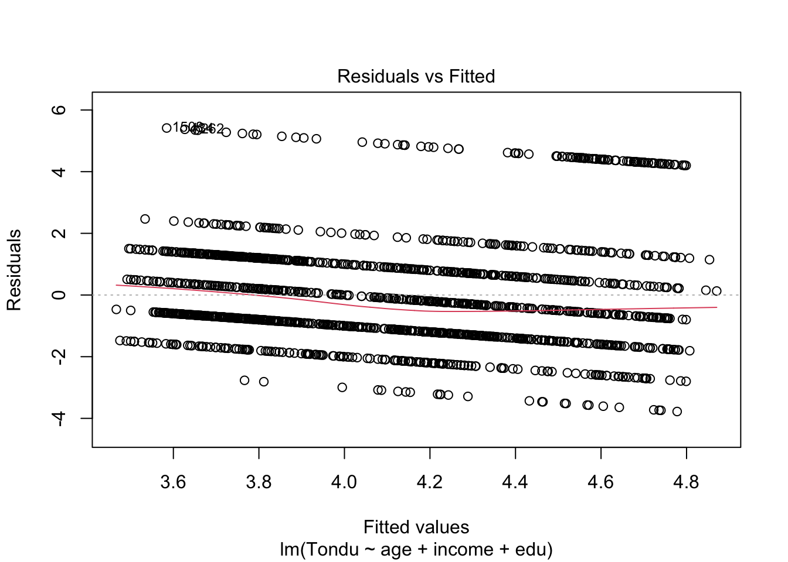

library("haven")
TEDS_2016<-read_dta("https://github.com/datageneration/home/blob/master/DataProgramming/data/TEDS_2016.dta?raw=true")Assignment 03
Access TEDS2016 dataset by importing
Select only relevant variables to create a subset of the dataset (Tondu, female, DPP, age, income, edu, Taiwanes eand Econ_worse).
TEDS_2016_subset <- subset(TEDS_2016, select = c("Tondu","female","DPP","age","income","edu","Taiwanese","Econ_worse"))Make sure the dependent variable Tondu is coded with right labels
TEDS_2016_subset$Tondu<-as.numeric(TEDS_2016_subset$Tondu,labels=c("Unification now", "Status quo, unif. in future", "Status quo, decide later", "Status quo forever", "Status quo, indep. in future", "Independence now", "No response"))Multiple regression analysis
Tondu refers to an attitude toward unification with mainland China.
model1=lm(Tondu ~ age + income + edu,data=TEDS_2016_subset)
summary(model1)
Call:
lm(formula = Tondu ~ age + income + edu, data = TEDS_2016_subset)
Residuals:
Min 1Q Median 3Q Max
-3.7780 -1.1841 -0.4322 1.1079 5.4157
Coefficients:
Estimate Std. Error t value Pr(>|t|)
(Intercept) 5.302529 0.257369 20.603 < 2e-16 ***
age -0.004205 0.003194 -1.316 0.1882
income -0.031855 0.016357 -1.948 0.0516 .
edu -0.244608 0.037579 -6.509 9.96e-11 ***
---
Signif. codes: 0 '***' 0.001 '**' 0.01 '*' 0.05 '.' 0.1 ' ' 1
Residual standard error: 1.725 on 1676 degrees of freedom
(10 observations deleted due to missingness)
Multiple R-squared: 0.04287, Adjusted R-squared: 0.04115
F-statistic: 25.02 on 3 and 1676 DF, p-value: 7.771e-16Regplot
(regplot= plot(lm(Tondu ~ age + income + edu, data = TEDS_2016_subset)))
NULLWhat is the problem? Why? (hint: how many categories in the DV?)
The problem is that the DV is not numerical but instead consisting of different categories. Linear regression analysis is not a suitable model in this case.
What can be done to improve prediction of the dependent variable?
We can try nominal logistic regression or multinomial logistic regression. This may be suitable because our DV consists of categories that are not ordered in any specific way.
Steps to run a multinomial regression analysis: https://stats.oarc.ucla.edu/r/dae/multinomial-logistic-regression/
First, we need to choose the level of our outcome that we wish to use as our baseline and specify this in the relevel function.
To do so, reorganize the DV as unordered factors (and before that, define a new subset to use with this newly defined DV).
TEDS_2016_subset1 <- subset(TEDS_2016, select = c("Tondu","female","DPP","age","income","edu","Taiwanese","Econ_worse"))
TEDS_2016_subset1$Tondu<-factor(TEDS_2016_subset$Tondu,labels=c("Unification now", "Status quo, unif. in future", "Status quo, decide later", "Status quo forever", "Status quo, indep. in future", "Independence now", "No response"))
TEDS_2016_subset1$Tondu1 <- relevel(factor(TEDS_2016_subset1$Tondu), ref = "Status quo forever")Then we run our model using multinom
library(nnet)
model2 <- multinom(Tondu1 ~ age + income +edu, data = TEDS_2016_subset1)# weights: 35 (24 variable)
initial value 3269.129050
iter 10 value 2869.593748
iter 20 value 2755.840913
iter 30 value 2651.919302
final value 2651.908647
convergedsummary(model2)Call:
multinom(formula = Tondu1 ~ age + income + edu, data = TEDS_2016_subset1)
Coefficients:
(Intercept) age income edu
Unification now -2.1549387 0.01010911 -0.063150287 -0.2394468
Status quo, unif. in future -2.8537017 0.02516931 0.024722292 0.2426497
Status quo, decide later 0.9803362 -0.01942986 0.010187277 0.1323068
Status quo, indep. in future 0.9225328 -0.03101966 0.003336138 0.1987447
Independence now 1.9743202 -0.03678385 -0.077439043 -0.2882092
No response -0.5399675 0.01876827 -0.065517089 -0.5604003
Std. Errors:
(Intercept) age income edu
Unification now 1.3202862 0.016403438 0.07947722 0.19072665
Status quo, unif. in future 0.5834670 0.007075456 0.03605767 0.07944057
Status quo, decide later 0.4367569 0.005491754 0.02754069 0.06292071
Status quo, indep. in future 0.4777090 0.006058734 0.03017855 0.07014215
Independence now 0.6862989 0.008950275 0.04397361 0.10342960
No response 0.7560652 0.009340697 0.04318008 0.11696422
Residual Deviance: 5303.817
AIC: 5351.817 The multinom package does not include p-value calculation for the regression coefficients, so we calculate p-values using a z-test.
z <- summary(model2)$coefficients/summary(model2)$standard.errors
p <- (1 - pnorm(abs(z), 0, 1)) * 2